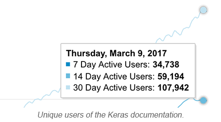

Keras was released two years ago, in March 2015. It then proceeded to grow from one user to one hundred thousand.

Hundreds of people have contributed to the Keras codebase. Many thousands have contributed to the community. Keras has enabled new startups, made researchers more productive, simplified the workflows of engineers at large companies, and opened up deep learning to thousands of people with no prior machine learning experience. And we believe this is just the beginning.
Now we are releasing Keras 2, with a new API (even easier to use!) that brings consistency with TensorFlow. This is a major step in preparation for the integration of the Keras API in core TensorFlow.
Many things have changed. This is your quick summary.
TensorFlow integration
Although Keras has supported TensorFlow as a runtime backend since December 2015, the Keras API had so far been kept separate from the TensorFlow codebase. This is changing: the Keras API will now become available directly as part of TensorFlow, starting with TensorFlow 1.2. This is a big step towards making TensorFlow accessible to its next million users.
Keras is best understood as an API specification, not as a specific codebase. In fact, going fowards there will be two separate implementations of the Keras spec: the internal TensorFlow one, available as tf.keras, written in pure TensorFlow and deeply compatible with all TensorFlow functionality, and the external multi-backend one supporting both Theano and TensorFlow (and likely even more backends in the future).
Similarly, Skymind is implementing part of the Keras spec in Scala as ScalNet, and Keras.js is implementing part of the Keras API in JavaScript, to be run in the browser. As such, the Keras API is meant to become the lingua franca of deep learning practitioners, a common language shared across many different workflows, independent of the underlying platform. A unified API convention like Keras helps with code sharing and research reproducibility, and it allows for larger support communities.
API changes
The new Keras 2 API is our first long-term-support API: codebases written in Keras 2 next month should still run many years from now, on up-to-date software. To make this possible, we have extensively redesigned the API with this release, preempting most future issues. In particular, our new API choices are fully compatible with TensorFlow conventions.
- The API of most layers has significantly changed, in particular
Dense,BatchNormalization, and all convolutional layers. However, we have set up compatibility interfaces so that your Keras 1 code will still run in Keras 2 without issues (while printing warnings to help you convert your layer calls to the new API). - The API of generator training & evaluation methods has changed (i.e.
fit_generator,predict_generator, andevaluate_generator). Again, no worries: your Keras 1 calls will still work in Keras 2. - In
fit,nb_epochhas been renamedepochs. This change is also handled by our API conversion interfaces. - The saved weights format for many layers has changed. However, weights files saved with Keras 1 can still be loaded in Keras 2 models.
- The
objectivesmodule has been renamedlosses.
Breaking changes
Keeping in mind the large user base of Keras, we have done our best to minimize the number of breaking changes. However, some breakages are inevitable, especially for more advanced users.
- The legacy layers
MaxoutDense,TimeDistributedDense, andHighwayhave been permanently removed. - A number of legacy metrics and loss functions have been removed.
- The
BatchNormalizationlayer no longer supports themodeargument. - Because Keras internals have changed, custom layers have to be updated. Relatively little has changed, so it should be quick and easy. See this guide.
- In general, any piece of code that used undocumented Keras functionality could have broken, so advanced users may have some updating to do.
Get started
You can:
- Install Keras 2 from PyPI:
pip install keras --upgrade - Check out the code on Github.
- Read through the updated documentation.
Thanks to our contributors
Lots of people have committed code that has contributed specifically to the Keras 2 release. Many thanks to:
- Abhai Kollara Dilip
- Achal Shah
- Alexandre Kirszenberg
- Ariel Rokem
- Arpit Agarwal
- Bas Veeling
- Daniel Høyer Iversen
- Daniel Seichter
- Davy Song
- Fariz Rahman
- Fred Schroeder
- Frédéric Bastien
- Gijs van Tulder
- Hannah Vivian Shaw
- Hiroya Chiba
- Joseph Jin-Chuan Tang
- Joshua Chin
- Michael Oliver
- Paul Fitzpatrick
- Pokey Rule
- Rizky Luthfianto
- Vasilis Vryniotis
- @Spotlight0xff
- @jarfo
- @jihobak